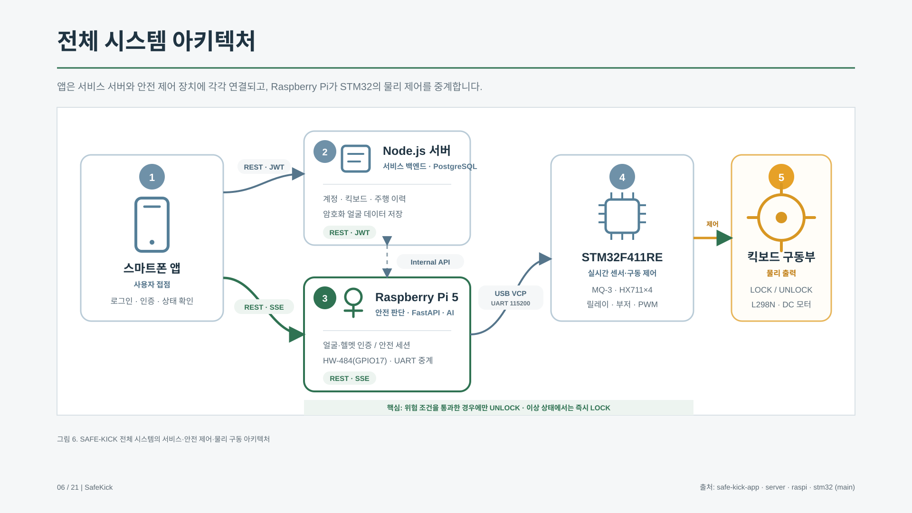
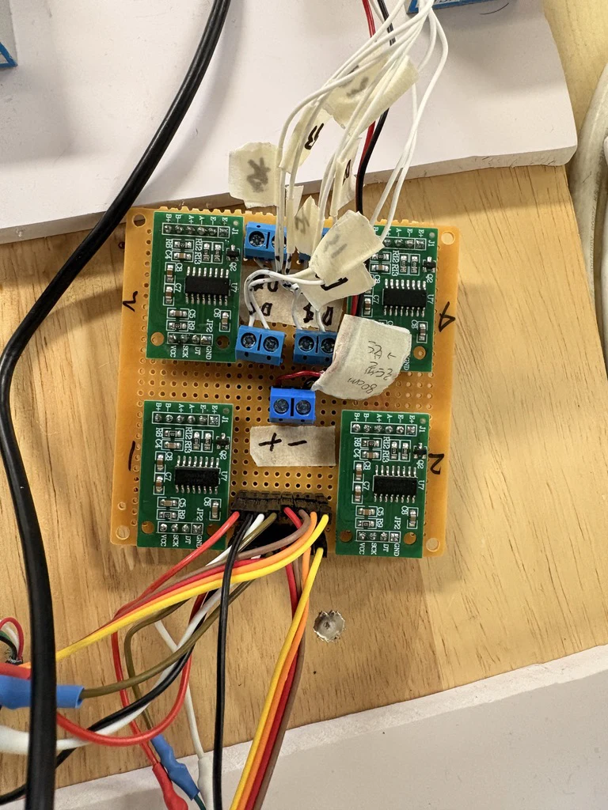

세이프킥 · 센서 수집부터 구동 차단까지
센서·구동부 하드웨어와 STM32 펌웨어를 맡아, 상위 판단이 실제 출력으로 이어지도록 구현했습니다.
전체 시스템
앱·서버는 사용자와 대여를 관리하고 Raspberry Pi는 안전 상태를 판단합니다. STM32가 측정값을 보내고 모터·릴레이·부저를 제어합니다.


내가 구현한 핵심 · 센서 드라이버와 UART
HX711 4채널의 24비트 값을 부호 확장하고 (원시값 − 영점) / scale로 환산했습니다. MQ-3의 12비트 ADC 값과 하중을 USART2 115200-8-N-1로 전달했습니다.
구동과 차단을 구분한 PWM·릴레이 제어
UNLOCK 후 PWM 0%로 대기하고 기동 조건에서 30%를 적용했습니다. 정상 구동은 25 ms마다 1%p씩 변경하며, LOCK은 즉시 PWM 0%·릴레이 OFF 경로를 실행합니다.
4점 하중 측정 · 센서와 출력부 실물 배선
로드셀 4개·HX711·보드·배터리·L298N·DC 모터를 연결했습니다. 소프트웨어 상태가 부저 경고와 릴레이 차단으로 이어지도록 장치를 통합했습니다.
담당: 하드웨어·STM32·Raspberry Pi 장치 통신. 앱·서버·AI는 팀원 담당이며, LOCK은 구동 출력 차단입니다.
센서 보정과 읽기 실패 시 구동 차단
채널별 편차는 보정하고, 불안정한 측정은 여러 표본으로 확인하며, 읽기 실패는 LOCK으로 처리했습니다.

01 · 채널별 오차는 영점·기준 추로 보정
문제 채널별 편차와 표시 중량 불일치가 있었습니다. 조치 무부하 10회 평균으로 영점을 저장하고, 기준 추로 scale을 다시 계산했습니다. 확인 재빌드 후 무부하와 기준 중량을 재확인했습니다. 영점·중량 환산 코드 ↗
02 · MQ-3 단일값 대신 기준·실측 표본 수집
문제 예열 상태와 baseline 변화가 판정에 영향을 줬습니다. 조치 기준값 8회와 실측값 8회를 500 ms 간격으로 수집해 Raspberry Pi가 여러 표본을 판단하도록 구성했습니다.
03 · 센서 무응답을 정상 운행으로 처리하지 않기
조치 HX711 읽기에 영점 보정 시 1초, 운행 중 200 ms의 대기 제한을 두고 실패 시 LOCK을 호출했습니다.대기 제한은 전체 차단 시간의 실측값이 아닙니다. MQ-3는 교정된 혈중알코올농도 측정기가 아닌 시제품 센서입니다.